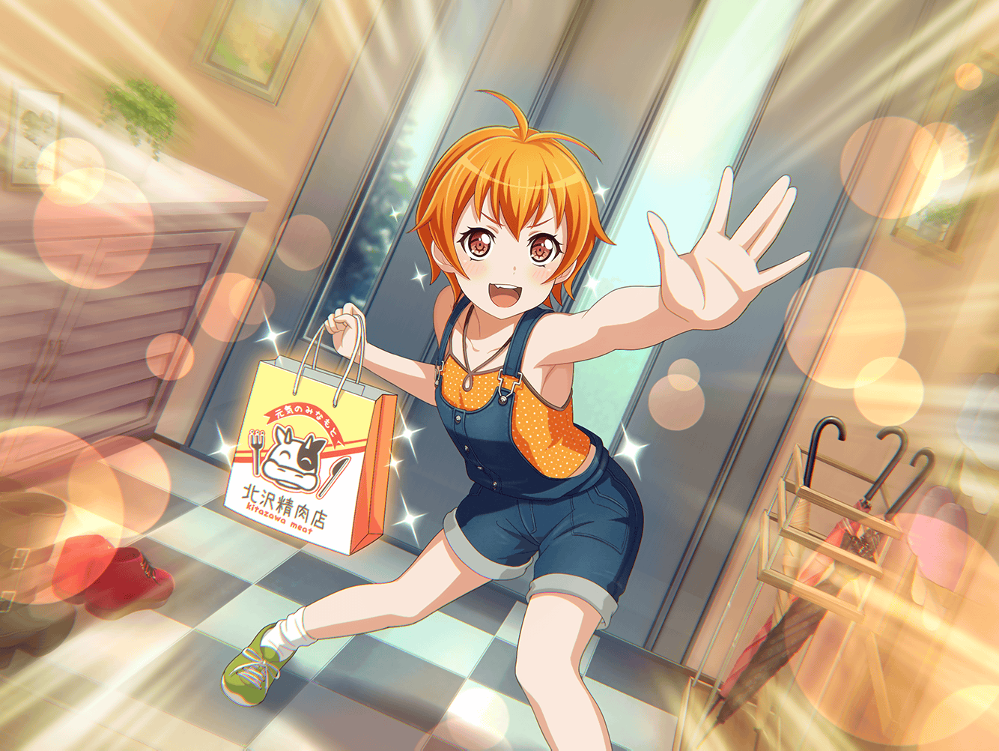

商店街
沙綾
巴が風邪で倒れた、か
あこ、すごい慌てようだったな……
途中で転ばないといいけど
沙綾
それにしてもあの元気な巴が……
大丈夫かな？
早く差し入れ持っていっ……
沙綾
ん？ あそこにいるのは……
沙綾
お～い、つぐ、はぐみ～！
つぐみ
あ、沙綾ちゃん。
こんにちは
はぐみ
おー、さーや！
何してるの？
お買いもの？？
沙綾
うん、家に帰ったら、すぐ買い出しを頼まれちゃって
はぐみはお店番？ つぐは何をしてるの？
はぐみ
うん、そーだよ！
つぐみ
私も沙綾ちゃんと一緒でお母さんに買いものを頼まれたの。
今夜はお肉料理にするんだって
沙綾
へぇ～、お肉料理ってなんだろう？
買いものバッグの中にある材料からすると……
ハンバーグかな？
つぐみ
わ、すごい！
よくわかったねっ
沙綾
あ、正解？
あはは、私の推理も当たるもんだね
はぐみ
さーやもなんか買ってく？
今日は鶏肉が美味しいのあるよ！
はぐみ
脂もいい感じに乗ってて
これ、焼いたら絶対美味しい！
間違いなし！！
沙綾
たしかにすごく美味しそうだね。
……って、ごめん。
私、あまりゆっくりしていられないんだった
はぐみ
ゆっくりしていられない？
何かあったの？？
沙綾
実はさっきあこと会ったんだけど、
なんでも巴が風邪で倒れちゃったらしいんだ
はぐみ
ええ～！ そうなのっ！？
沙綾
うん。あこが看病するって言ってたけど、
ひとりじゃ大変だろうし、
今から巴の家に差し入れを持って行こうと思ってて……
つぐみ
実は私達もお見舞いに行こうと思ってたんだ。
でも、巴ちゃんにメッセージで
『風邪がうつるから来るな』って断られちゃって……
沙綾
あはは、自分の心配より
人の心配なんて巴らしいね
つぐみ
うん。でも、沙綾ちゃんが行くなら、
やっぱり私も一緒に行きたい！
だって、巴ちゃんのこと心配だもん！
つぐみ
うちの特製しょうが紅茶を飲んで、
元気になってもらいたいな！
はぐみ
じゃあ、はぐみは鶏団子を持って行く！
栄養満点だし、お腹にも優しいよ！
沙綾
え？
でも、はぐみは店の当番じゃ……
はぐみ
当番はとーちゃんにお願いするから
大丈夫だよ！
沙綾
そっか。
なら、３人で差し入れを持って行こうか
はぐみ・つぐみ
うんっ！
沙綾
じゃあ、一旦帰って、
それぞれ差し入れ持って、どこかに集まろうか？
つぐみ
うん、そうだね。
場所はここでいいと思うけど、
時間はどうする？
沙綾
そうだな～。
用意する時間も考えて、３０分後でどうかな？
つぐみ
うん、賛成！
はぐみ
はぐみもー！
沙綾
オッケー。
それじゃあ３０分後に！
１回解散っ！

３０分後
沙綾
ごめん、お待たせ！
差し入れの準備をするのに、
ちょっと手間取っちゃってっ
つぐみ
ううん、まだ今来たところだから大丈夫だよ
沙綾
ほんと？
はぁ……間に合ってよかった
はぐみ
くんくん……おお！
さーやが持ってるカゴの中から、
すごく甘い匂いがする！
沙綾
もしかしたら、
フレンチトーストにかけたハチミツの匂いかも
つぐみ
沙綾ちゃんはフレンチトーストを
差し入れにしたんだ？
沙綾
うん。あと、白パン。
両方食べやすいからね。
はぐみとつぐはなんにしたの？
はぐみ
はぐみも栄養を考えて
鶏団子とコロッケ！
つぐみ
わ、私はさっき言ってた
しょうが紅茶を持ってきたよ
はぐみ
えへへ、みんな、美味しそうだね！
これを食べれば、
きっとトモちんもすぐによくなること間違いなしだね！
はぐみ
そういうわけで、早速、トモちんの家に行くぞー！
おー！！
沙綾・つぐみ
おー！
はぐみ
よーし！ ふたりともはぐみに続けー！